Pulau Bintan merupakan daerah yang memiliki banyak sekali tempat
destinasi wisata, sesuai dengan kata pulau, Bintan memiliki banyak
sekali pantai yang indah indah, dan pemandangan yang terasa sama
seperti bali. Tidak hanya warga lokal saja yang berkunjung tetapi
banyak juga warga asing yang seringkali berkunjung ke bintan,
seperti warga asing yang berasal dari negara singapore, malaysia,
dan negara negara di asia lain nya. Dan tidak hanya Asia saja,
bahkan warga Eropa juga banyak sekali berkunjung ke Bintan untuk
menikmati keindahan pantai dan keindahan pemandangan lain nya.
Berikut adalah beberapa destinasi wisata yang ada di bintan
1. Pantai Trikora
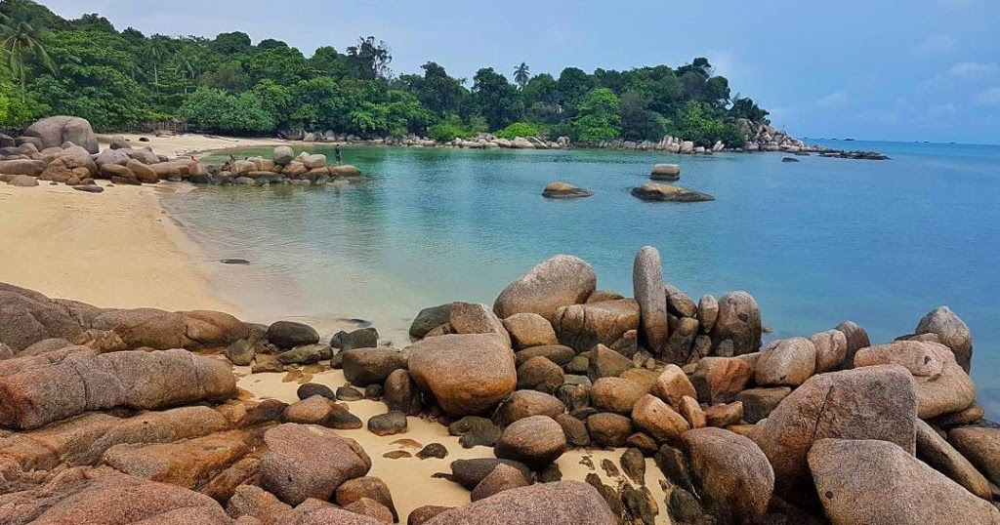
Ini adalah Pantai yang sering di kunjungi oleh para keluarga untuk
mengadakan acara piknik, biasanya di hari lebaran ke 3 pantai ini
di penuhi oleh keluarga keluarga. tak hanya pantai nya yang putih
dan bersih, pantai trikora ada banyak sekali batu batu besar yang
kelihatan cantik sekali. Pantai Trikora terbagi menjadi beberapa
bagian pantai atau destinasi wisata, contoh nya seperti:
pantai trikora 1
pantai trikora 2
pantai trikora 3
pantai trikora 4
pantai trikora 5
walaupun pantai trikora terbagi menjadi beberapa bagian, namun di
setiap pantai nya memilki keunikan dan keindahan nya sendiri,
contoh di pantai trikora 3 yang banyak bebatuan dan juga menjadi
tempat yang sering di kunjungi oleh para wisatawan yang berkunjung
untuk berfoto. Tak hanya itu saja, pantai trikora juga memilki
berbagai keindahan lain nya.
2. Lagoi
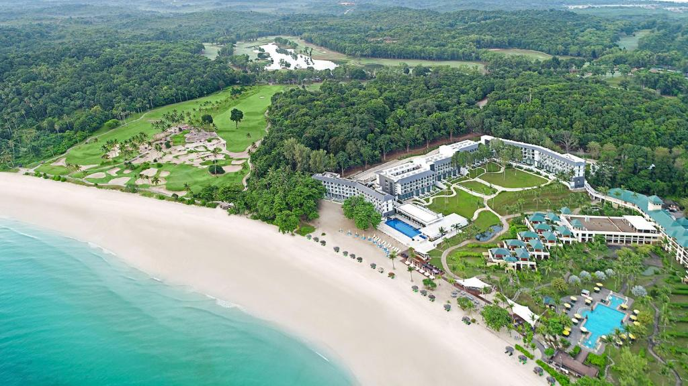
Rasanya tidak lengkap jika berkunjung ke Bintan tidak pergi ke
lagoi, selain banyak destinasi wiisata pantai nya, di lagoi juga
memiliki hotel hotel berkelas yang bisa di jadikan tempat
penginapan turis asing maupun warga negara yang berwisata kesini.
Identik dengan pantai nya yang bersih dan putih, lagoi juga di
kenal dengan tempat yang memperkenalkan budaya budaya Indonesia.
Berikut adalah destinasi destinasi yang ada di lagoi:
Lagoi Bay
Pantai Nirwana
Treasure Bay
Laguna Bintan
Crystal Lagoon
Sebenerya masih banyak lagi destinasi yang ada di lagoi, sangking
banyak nya kami tidak bisa menuliskan semuanya, namun wisata yang
kami sebutkan di atas adalah wisata yang paling banyak di kunjungi
okeh wisatawan yang berkunjung ke Bintan.
3. Telaga Biru
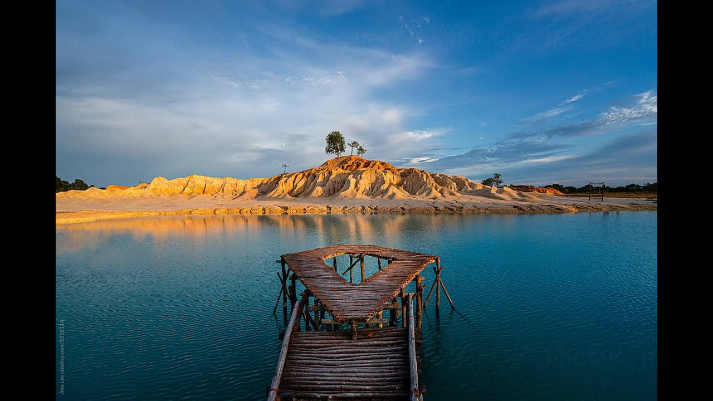
Tadi kita sudah memberikan informasi seputar pantai, sekarang kita
akan memberikan informasi tempat wisata selain pantai, ya itu
Telaga Biru.Telaga Biru adalah tempat destinasi wisata yang cocok
di kunjungi oleh parawisatawan yang sangat tertarik kepada
keindahan alam. Disini kita bisa melihat pasir putih yang luas,
orang sini biasa nya menyebut gurun pasir nya Bintan. Tak hanya
itu, di Telaga Biru memilki danau yang air nya sangat jernih dan
cantik. Tempat ini cocok di kunjungi untuk keluarga, pasangan,
maupun teman teman yang ingin berfoto. Disini juga memilki
beberapa spot foto dan permainan, seperti berfoto dengan burung
Rajawali, onta mainan. Dan juga kalian bisa bermain motor ATV dan
juga panahan, bahkan ada juga perahu papan yang bisa kalian naiki.
Berlokasi di Jl. Raya Busung, Busung, Kec. Seri Kuala Lobam,
Kabupaten Bintan, Kepulauan Riau 29152.
KULINER
Pulau Bintan juga memiliki kuliner kuliner yang menarik loh, selain
memiliki destinasi yang indah dan cantik, pulau bintan juga pastinya
memilki kuliner yang sedap sedap. banyak sekali makanan makanan yang
bisa di bilang iconic banget sama bintan, seperti makanan makanan
yang ada di laut, seperti kepiting, ikan bakar, dan masih banyak
lagi. Yang paling iconic dari makanan lau di Bintan adalah gong
gong, gong gohg adalah gerang yang di rebus beberapa menit, dan di
sajikan dengan cangkang. Berikut adalah beberapa kuliner kuliner
yang ada ]di Bintan.
1. Gong Gong.
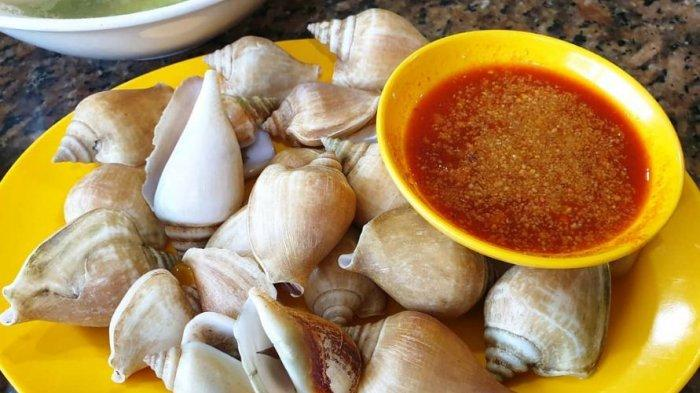
Gong gong adalah salah satu makanan khas iconic nya Bintan,
makanan ini terbuat dari kerang yang di rebus dengan cangkkang
nya, lalu di sajikan dengan cangkang nya pula. Biasanya gong gong
di sajikan dengan sambal, lebih cocok dengan sambal yang pedas,
dan juga dengan jeruk nipis sesuai tergantung selera masing
masing. Biasanya gong gong di jual di rumah makan yang ada di tepi
laut, yang biasanya kami sebut dengan Restoran Kelong. Gong gong
ini sangat enak bila di santap di sore hari sambil menikmati senja
saat matahai terbenam.
2. Mie Tarempa.
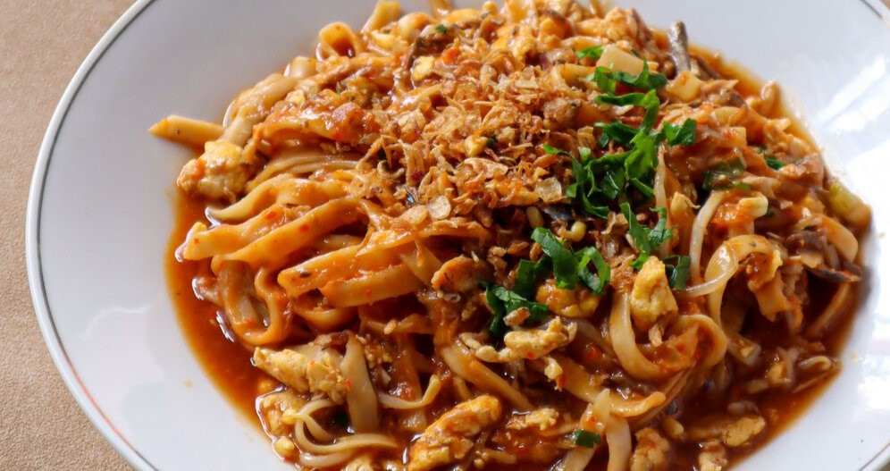
Mie Tarempa merupakan makanan khas yang sangat terkenal di daerah
Bintan. Bumbu bumbu yang khas pada mie tarempa ini sangat membuat
mie tarempa enak di rasa dan juga memiliki cita rasa yang sangat
berbeda dengan mie lain nya. mie ini di kenal dengan cita rasa
asam manis yang pedas di lidah, namun tidak terlalu pedas. Mkanan
ini sedikit berminyak jadi bagi yang tidak suka makanan berminyak
jadi tidak di rekomendasikan. Mie ini biasnya di jual di warung
makan kecil tersendiri, ataupun di jual di warung warunng yang ada
di pinggir jalan.
3. Otak-Otak
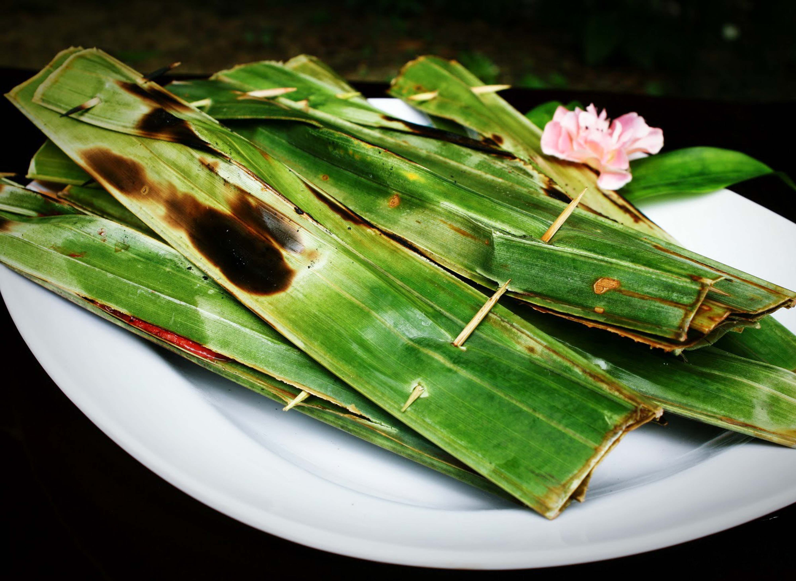
Nah ini adalah salah satu maknan khas ketiga yang kami
rekomendasikan. Tak lengkap rasanya bila ke Bintan tidak mencoba
makanan ini. Otak otak merupakan makanan yang dibuat dari ikan
yang di campur dengan bumbu khas, dan di bungkus menggunakan daun
kelapa, lalu di bakar. Makanan ini tidak hanya terbuat dari ikan
saja, tapi ada sotong, udang dan masih banyak lagi. makanan ini
biasanya di jual di pinggir jalan atau dekat pantai pantai. Mkanan
ini sangat enak bila di santap ketika masih dalam keadaan hangat.
4. Mie Laksa
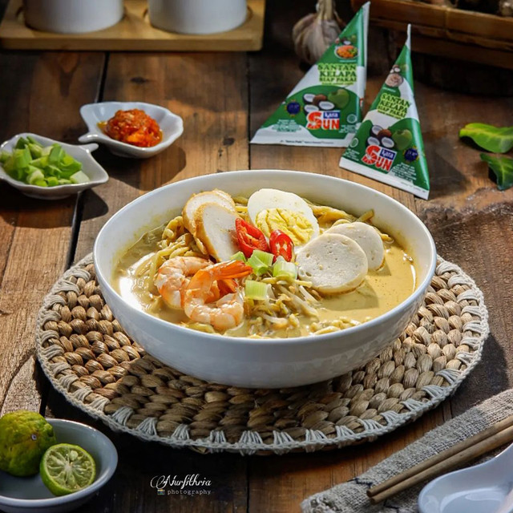
Mari kita merekomendasikan mie lagi ni, tapi yang kali ini berbeda
dengan mie yang tarempa. Mie laksa adalah mie yang di campur
dengan kuah kari yang kental, dan lebih sedap lagi di tambah
dengan telur rebus, udang, dan juga daging ayam. Biasanya saat
lebaran banyak sekali ibu ibu sini membuat mie laksa ini untuk
hidangan hari raya.
5. Kerang Bulu.
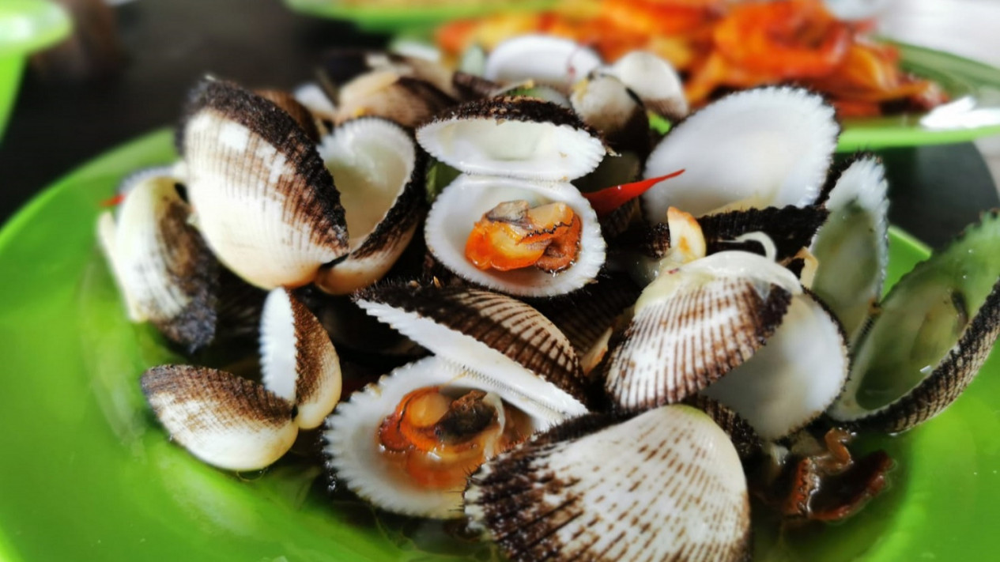
Ini adakah makanan yang berasal dari laut lain nya yang khas
banget sama Bintan. Kerang bulu merupakan makanan kerang yang di
rebus dengan racikan racikan bumbu khas, biasanya ada yang
menyajikan nya sama cangkang dan ada juga yang sudah di kelupas
cangkakng nya. Makanan ini sangat enak di makan ketika masih
hangat, dan juga makin mantap ketika di sajikan dengan sambal.
Sama seperti gong gong, kerang bulu ini biasanya di jual di
restoran pinggir pantai atau yang kami sering sebut kelong.
BUDAYA
Budaya di Bintan sangat beragam, dikarnakan Bintan merupakan daerah
yang memiliki banyak sekali suku suku yang berbeda beda, seperti
suku, melayu, bugis, tionghoa dan masih banyak lagi, tetapi di
Bintan sangat kental dengan suku melayu nya. Suku melayu di Bintan
sangat lah beragam, mulai dari bahasa, adat istiadat, bahasa yang
paling sering di gunakan di Bintan adalah bahasa Melayu. dan juga
makanan yang sudah kita bahas pada artikel sebelum nya. Tidak hanya
itu saja, disini kami akan memperkenal kan tarian khas Bintan, rumah
adat, dan juga pakaian adat yang ada di Bintan.
1. Persembahan Tari.
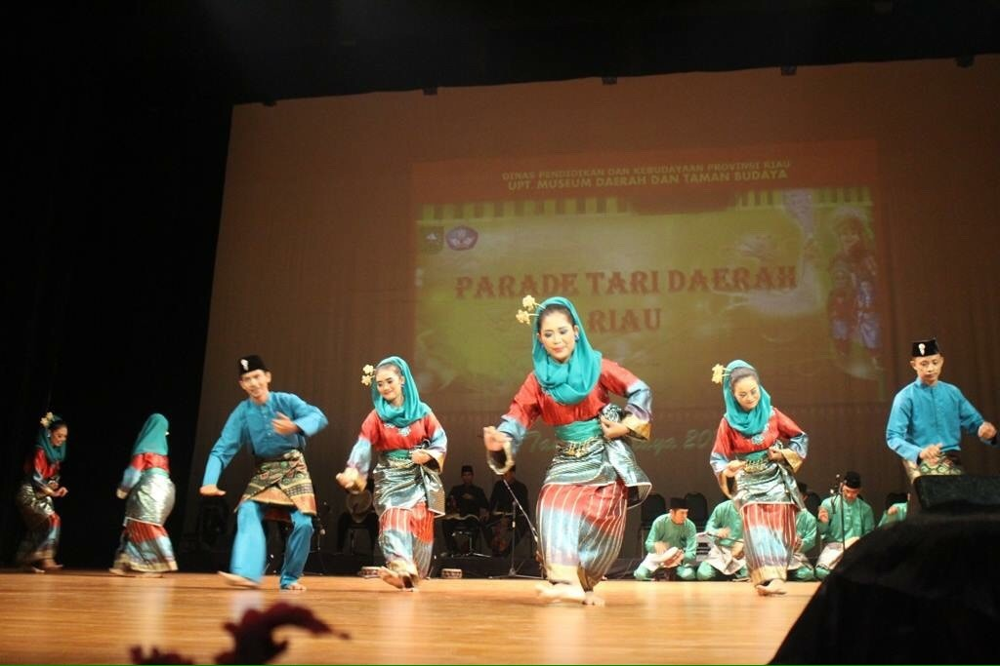
zapin melayu
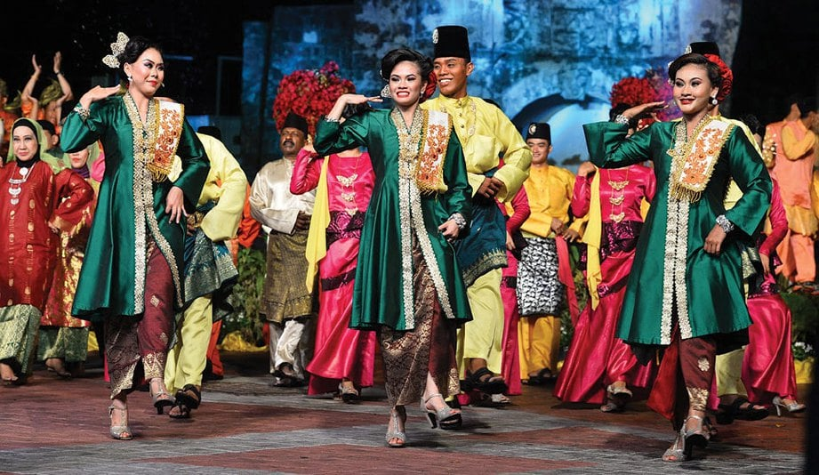
tari joget lambak
Zapin Melayu
Zapin Melayu adalah tarian khas yang berasal dari Kepulauan
Riau, Yang di mana tarian ini seringkali di persembahkan di
acara acara formal atau penyambutan tamu tamu penting. Tarian
inisangat terkenal jadi tak heran jika dimana mana banyak
terdengar musik musik zapin yang mengiringi tarian ini. Tarian
ini di dominasi oleh penari wanita, walau begitu ada juga penari
pria yang ikut serta dalam tarian ini.
Tari Joget Lambak
Tari Joget Lambak merupakan tarian yang berasal dari daerah
Bintan, tarian ini sangat terkenal di Bintan, dan sering di
persembahkan di acara acara adat. Tarian ini juga didominasi
oleh para penari wanita, dan diiringi oleh musik musik
tradisional yang khas. Tarian ini sangat indah di lihat, dan
juga sangat menarik untuk di tonton.
2. Rumah Adat.
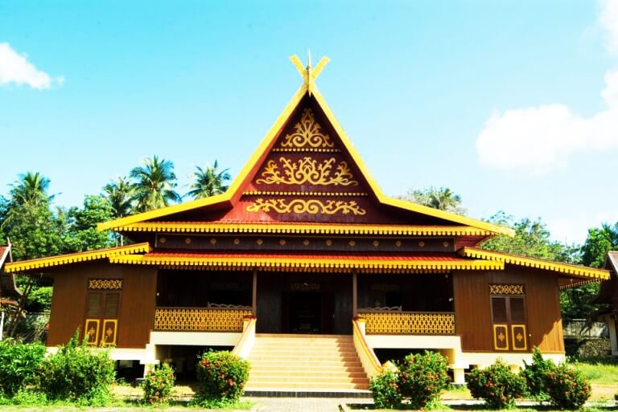
rumah adat melayu
Di bawah ini adalah beberapa rumah adat melayu yang sering sekali
terlihat di sekitaran Bintan. Kenapa Rumah adat Melayu?, karena di
Bintan mayoritas masyarakat nya adalah melayu, jadi masih banyak
rumah rumah tradisional adat melayu. Di bawah ini kamu memberikan
gambaran tentang rumah rumah adat melayu
Rumah Selaso Jatuh Kembar
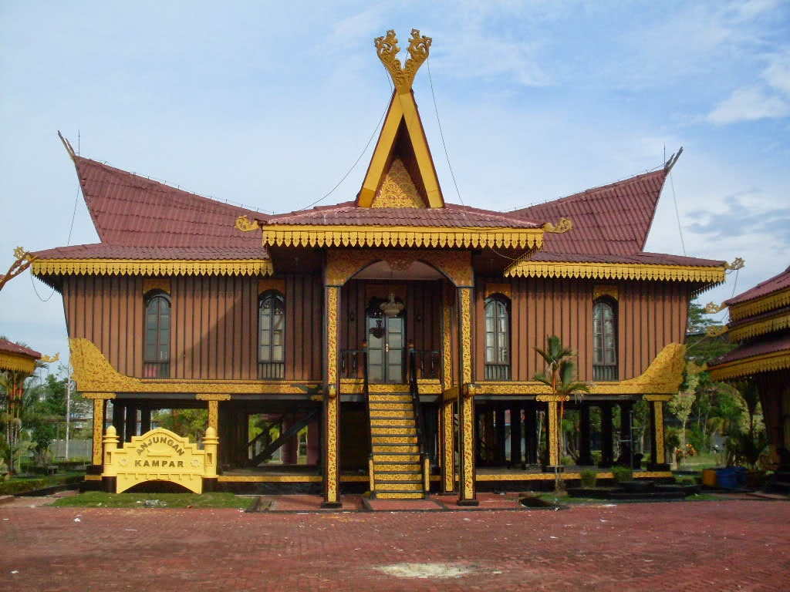
Rumah Atap Lotik
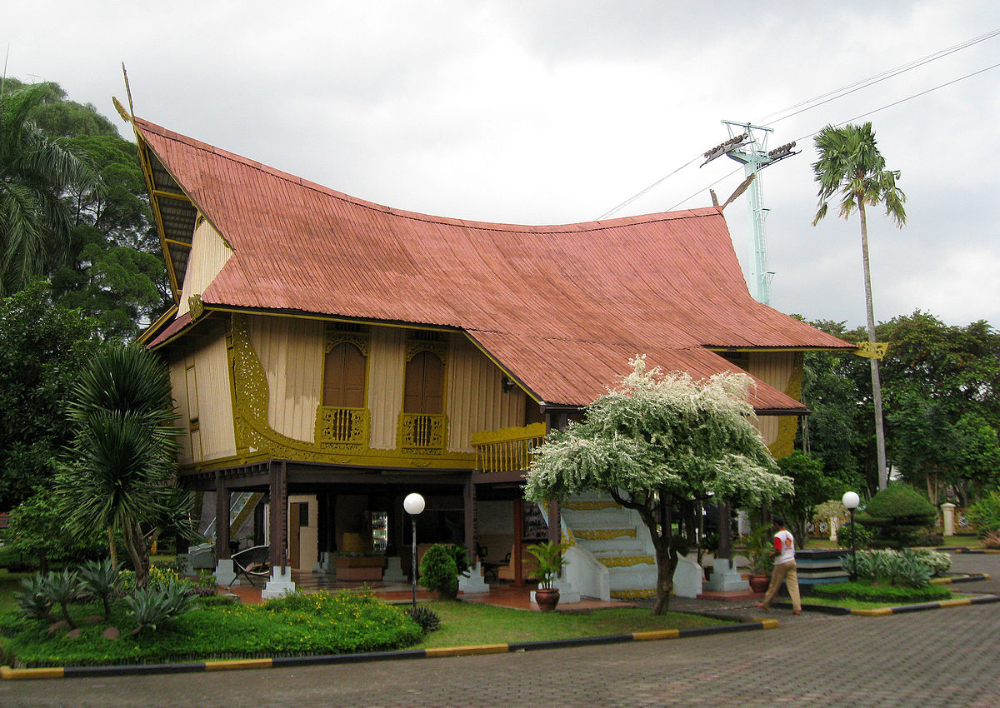
Rumah Limas Potong
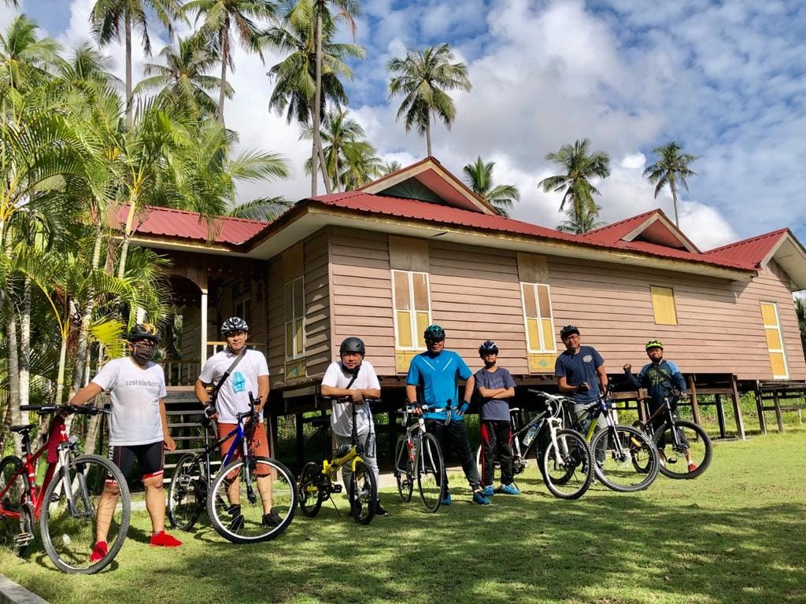
Rumah Balaso Jatuh
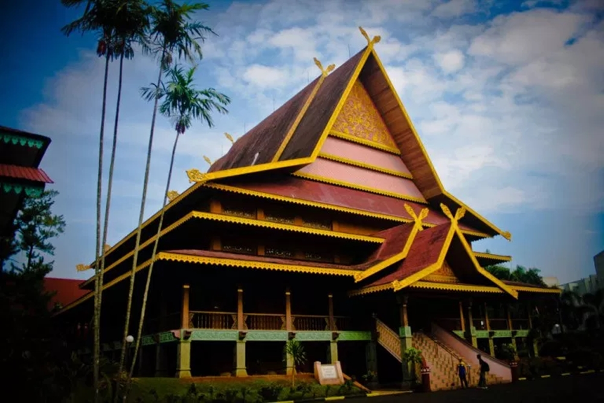
3. Pakaian Adat.
Kita sudah membahas rumah adat dan tarian khas yang ada di Bintan,
nah sekarang kita akan membahas tentang pakaian adat melayu yang
sering di jadikan pakaian tradisional khas bintan sebagai daerah
yang bermayoritas melayu. Baju tradisional melayu sangat terkenal
disebut baju kurung, baju ini biasanya di pakai oleh wanita dan
pria menggunakan songket, dan dipakaikan tanjak untuk pria. Untuk
lebih jelas penggambaran nya, di bawah ini kami akan memberikan
gambaran nya.